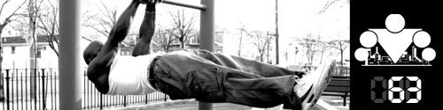
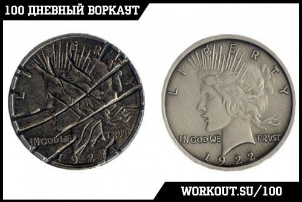

100 Дневный воркаут
<==== Вернуться к оглавлению
День 63. Конкуренция, как стимул к развитию

Как всегда последний день тренировочной недели мы посвящаем
развитию гибкости и растяжке
. Если кому-то это кажется скучным или ненужным, то поверьте мне, только тот, кто давно не растягивался и потерял гибкость, сможет по-настоящему оценить важность этого занятия ;)
Ну а в рамках сегодняшнего инфо-поста мне бы хотелось поговорить о соревнованиях и своём отношении к ним. Скорее не только о соревнованиях в воркауте (которые являются отличным способом популяризации движения, но их соревновательная составляющая оставляет слишком много вопросов и поэтому мы выступаем скорее против соревнований, чем в их поддержку), сколько о той мотивации, которую дает нам соперничество и конкуренция.
Сразу отметим тот факт, что спортивная мотивация очень сильно отличается от внутренней мотивации, а спортивные цели отличаются от внутренних целей. И я сейчас говорю не об абстрактном стремлении быть быстрее, выше, сильнее (потому что эти три принципа можно применить и к самому себе), я сейчас говорю о настоящем соревновании с кем-то ещё, когда вы играете в игру с нулевой суммой (если кто-то выиграл, значит кто-то другой проиграл, только так).
При правильном подходе такие соревнования могут стимулировать гораздо сильнее, чем постепенное развитие. Фактически это революция против эволюции. Я думаю, если вы когда-либо с кем-либо в чём-либо соревновались, то отлично понимаете о чём я сейчас говорю. Спортивный азарт, адреналин или что там ещё, заставляют вас выкладываться на все 100%, я имею в виду на настоящие 100%, а не тот уровень, к которому вы привыкли. Порою вы даже выходите за пределы своих возможностей! В то время, когда я обычно подтягивался порядка 20-25 раз, на соревнованиях я мог легко вытянуть все 30. Желание победить - действительно очень мощный стимул.

Но у любой медали есть две стороны, и поэтому говоря о спортивной мотивации не стоит забывать и о тех негативных последствиях, к которым она может привести. Дополнительное стимулирование к достижениям - это отлично, но эти достижения не должны ставиться во главу угла! В отличие от профессиональных спортсменов, у воркаутеров совсем другие цели - это, в первую очередь, здоровье, во вторую красота, сила, развитие, ну и так далее. Ну и не только о воркауте сейчас идёт речь, а о любых видах спорта, которыми вы занимаетесь, и в которых соревнуетесь. И именно о здоровье надо думать в первую очередь, как бы не страдало ваше самолюбие при этом. НЕ СТОИТ состязаться, если вы не очень хорошо себя чувствуете или у вас какая-то травма, НЕ НУЖНО пытаться кому-то что-то доказать, рискуя своим здоровьем, НИ К ЧЕМУ вам стараться как можно скорее прыгнуть выше своей головы, потому что придёт время и со временем вы достигнете желаемого уровня. И здесь я бы хотел вам напомнить о том, что в первую очередь вы должны соревноваться сами с собой, с теми вами, которыми вы являетесь сегодня, вы должны стремиться становиться лучше с каждым днём.
Я не хочу сказать, что не нужно стремиться быть первым и не нужно соревноваться с другими людьми, нужно, но не нужно превращать это в самоцель ;) Поэтому, используйте спортивную составляющую с умом, используйте её в качестве дополнительной мотивации для тренировок, но всегда помните о главной цели!
Лично я нахожу себе азарт и спортивный интерес совсем не в количестве подтягиваний или победе на очередных соревнованиях, а в том, сколько человек я смог привлечь в воркаут. Насколько я смог увеличить количество участников 100 дневки, по сравнению с прошлым запуском. Насколько больше людей я смог познакомить с воркаутом в этом году, по сравнению с прошлым. И так далее. Я знаю, как сильно и круто воркаут может изменить жизнь человека, и это для меня является самым главным стимулом и самой важной целью. Показать людям воркаут. Надеюсь, что я не одинок в своём стремлении, верно?)
P.S.
В тексте я в основном говорил о спортивных соревнованиях и состязаниях, но вся идея отлично ложится и на дружеские соревнования и споры из серии "кто больше подтянется". Спортивный азарт - это одна из причин, по которым заниматься в паре с кем-нибудь или в команде единомышленников бывает эффективнее, чем в одиночку. Они просто не дают вам схалявить лишний раз ;)
Например сейчас я тренирую пресс каждый день по
этому видео
- в точности по нему. Потому что это отличная замена секундомеру или таймеру на каждый 30 секунд Я знаю, что мне нужно сделать каждое упражнение ровно 30 секунд и никуда мне от этого не деться, и лично меня это мотивирует. Тоже самое и когда я тренируюсь с кем-нибудь, кто сильнее меня, это мотивирует меня тренироваться активнее (и ещё я стараюсь узнать как можно больше полезной информации от этого человека).
======> День 64. Продвинутая техника №3